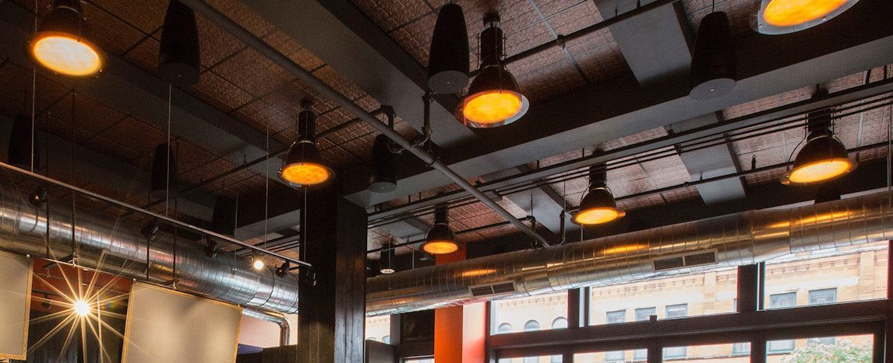
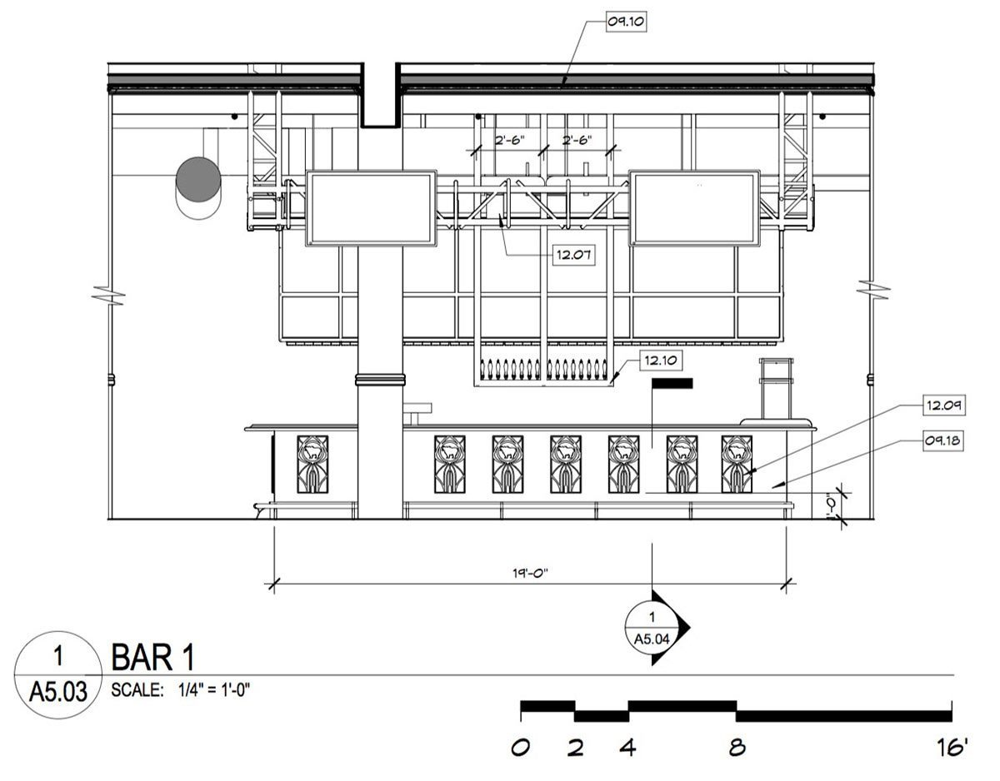
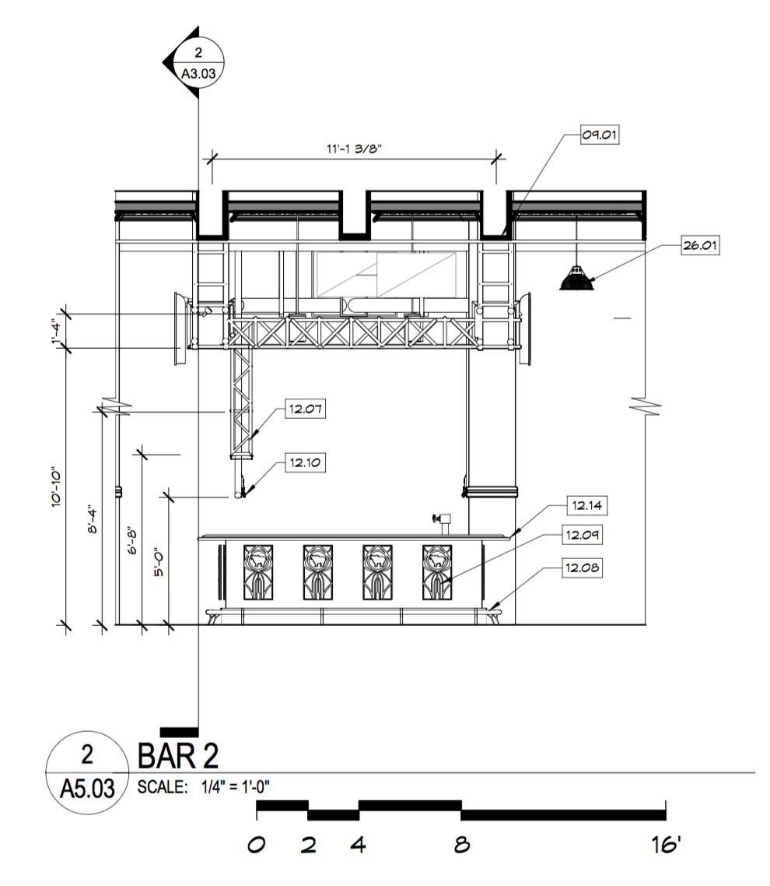

Retail / 2018
Kuma's Corner West Loop
Lighting, metalwork, furnishings
Custom lighting, metalwork, furnishings, and artistic details for the Fulton Market location.
Development and manufacture of custom lighting, metalwork, selected furnishings, and artistic details for the Kuma's Corner West Loop location at Peoria and Fulton Market.
Hand blown Boolean pendants and custom below bar shadow boxes encircle the bar, with five larger Boolean pendants produced for the west wall portals. The below bar LED shadow boxes carry a rusted steel patina.
Details
- Year
2018 - Location
Chicago, IL - Category
Retail - Materials
Hand blown glass, rusted steel, LED
Index


